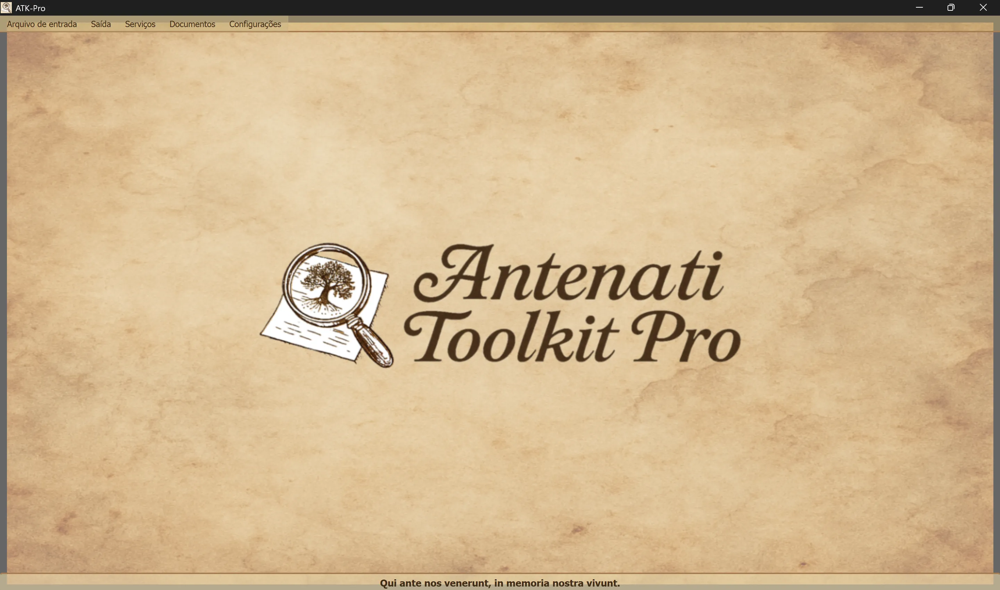

────────────────────────────────────────────────────────────────────────────────
🪟 Windows
ATK-Pro-Setup-vx.x.x.exe na página oficial de lançamentos🐧 Linux
ATK-Pro-vx.x.x.deb (Debian/Ubuntu) ou .tar.gz na página de lançamentossudo dpkg -i ATK-Pro-vx.x.x.deb ou clique duas vezes no Nautilus/Files./ATK-Pro a partir da pasta extraída🍎 macOS
ATK-Pro-vx.x.x.dmg na página de lançamentos🪟 Windows
C:\Program Files\ATK-Pro\C:\Users\[SeuNome]\Documents\ATK-Pro\output\C:\Users\[SeuNome]\Documents\ATK-Pro\input\🐧 Linux
/opt/ATK-Pro/ (.deb) ou pasta extraída (.tar.gz)~/Documents/ATK-Pro/output/~/Documents/ATK-Pro/input/🍎 macOS
/Applications/ATK-Pro.app~/Documents/ATK-Pro/output/~/Documents/ATK-Pro/input/────────────────────────────────────────────────────────────────────────────────
Os idiomas disponíveis são:
com as quais, com base nos dados disponíveis no final de 2025, estima-se que seja possível cobrir cerca de 98% dos descendentes de italianos e das comunidades italianas ou italófonas espalhadas pelo mundo.
Na primeira execução, o programa cria automaticamente as seguintes pastas:
C:\Users\[SeuNome]\Documents\ATK-Pro\output\C:\Users\[SeuNome]\Documents\ATK-Pro\output\doc\ (padrão: documentos)C:\Users\[SeuNome]\Documents\ATK-Pro\output\reg\ (padrão: registros)~/Documents/ATK-Pro/output/input\ análoga (opcional, para arquivos de entrada)Durante o processamento, são criadas pastas temporárias para os tiles baixados (tiles_canvas_X/) e, caso o PDF seja solicitado, arquivos temporários para gerá-lo.
Todas as pastas e todos os arquivos temporários são excluídos automaticamente ao final do processamento.
Restam apenas os arquivos finais processados (imagens nos formatos escolhidos, PDF, manifestos e metadados).
Para alterar as pastas de saída, use Menu → Configurações → "Selecionar pastas de saída". As escolhas são armazenadas e restauradas automaticamente na sessão seguinte.
O comando Configurações → Perfil de recursos ajusta o paralelismo utilizado durante o download, a reconstrução das imagens e a geração dos PDFs:
O perfil não altera a qualidade, os direitos nem a quantidade dos documentos obtidos. Os limites prudenciais específicos de cada portal continuam tendo precedência.
────────────────────────────────────────────────────────────────────────────────
A janela principal do Antenati Toolkit Pro tem uma estrutura simples e intuitiva.

Na parte inferior, aparece o lema latino “Qui ante nos venerunt, in memoria nostra vivunt”, para lembrar a importância das raízes e da memória coletiva.
Na parte superior da janela, abaixo do cabeçalho:
[Arquivo de entrada] [Saída] [Serviços] [Documentos] [Configurações]
Cada menu contém botões e opções específicos (consulte a seção seguinte).
Gerencia o carregamento dos registros IIIF:
├─ Exemplo de entrada
│ └─ Exibe o arquivo de exemplo (mostra o formato dos pares: modo D/R + URL)
├─ Abrir entrada
│ └─ Selecione um arquivo .txt com seus registros IIIF
│ (Deve conter pares: modo D/R na linha 1, URL na linha 2)
└─ Editar entrada
└─ Edita o arquivo de entrada atualmente carregado
(Adicione/remova registros, altere URL, salve as alterações)
Gerencia o processamento e a saída:
├─ Processar │ └─ Inicia o download, a reconstrução e o salvamento das imagens │ (Exibe uma janela de progresso em tempo real) ├─ Abrir pasta de saída │ └─ Abre no Explorador de Arquivos a pasta que contém os arquivos processados └─ Exibir processamentos anteriores └─ Lista dos registros já processados
Lista dos serviços integrados:
├─ Pesquisa assistida por IA │ └─ Sugere portais, linhas de pesquisa e consultas genealógicas a serem verificadas ├─ Visualização de imagens │ └─ Visualizador de imagens baixadas e/ou PDF gerados ├─ Visualização de metadados JSON │ └─ JSON originais e metadados (genealógicos, técnicos, EXIF) ├─ OCR avançado │ └─ Textos manuscritos do século XIX, em latim eclesiástico e do final da Idade Média ├─ Tradução de OCR │ └─ Tradução automática dos textos extraídos para os idiomas selecionados └─ Exportação GEDCOM └─ GEDCOM, Gramps, Family Tree Maker, Ancestry, MyHeritage, WikiTree etc.
Acesso a recursos e documentação:
├─ Aviso legal - Cláusulas legais e termos de uso ├─ Apresentação do autor - Histórico do autor do projeto ├─ Apresentação do projeto - História, motivações e roteiro de desenvolvimento do ATK-Pro ├─ Guia - Índice principal do guia modular └─ Informações - Versão, direitos autorais e e-mail de contato
Configuração geral do programa:
├─ Alterar idioma
│ └─ Selecione o idioma da interface (requer reinicialização)
├─ Selecionar formatos de imagem
│ └─ Escolha entre PNG, JPG, TIFF e PDF (pelo menos 1 é obrigatório)
│ PDF pode ser selecionado sozinho ou junto com os formatos de imagem
│ A escolha é armazenada e pré-selecionada automaticamente na sessão seguinte
├─ Selecionar pastas de saída
│ └─ Primeiro abre a seleção do modo de organização das pastas e, depois, as janelas de seleção:
│ • Pasta única para todos → uma única pasta para documentos e registros
│ • Pastas separadas doc/reg → uma pasta para todos os documentos e outra para todos os registros
│ • Pasta para cada registro → uma pasta distinta para cada registro
│ O modo e as pastas são armazenados e restaurados na sessão seguinte
├─ Exportar configuração
│ └─ Salva as configurações atuais em um arquivo
├─ Importar configuração
│ └─ Carrega um arquivo de configurações salvo anteriormente (restaura todas as preferências e os caminhos)
├─ Verificar atualizações
│ └─ Verifica se há novas versões do programa disponíveis
└─ Fechar
└─ Encerra o programa (exibe um banner de suporte do PayPal.me)
────────────────────────────────────────────────────────────────────────────────
ATK-Pro está disponível em 20 idiomas:
O idioma pode ser alterado a qualquer momento através de Menu → Configurações → Alterar idioma.
O programa requer uma reinicialização para aplicar o novo idioma.
Ao reiniciar, o programa carrega automaticamente o novo idioma selecionado.
Ao alterar o idioma, são traduzidos:
Se um modelo predefinido for retirado ou deixar de estar disponível, o ATK-Pro consulta o catálogo visível para a credencial, seleciona um modelo generalista compatível com a função e com imagens quando necessário e tenta até três alternativas. O fallback não é ativado para erros de quota, rede ou autenticação.
Substituição do modelo: um modelo introduzido manualmente permanece vinculativo e nunca é substituído automaticamente.